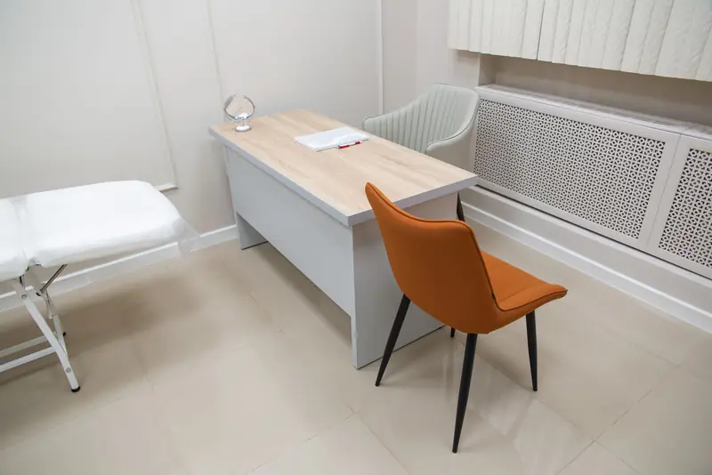

Consultation sheet and exports for aesthetic clinics

After a simulation, Faceliora Clinic gathers the plan into a consultation sheet the client can take home: the original scan and the simulation side by side from several angles, a comparison video and a PDF. The clinic can add its own quotation and later record what was actually used. Every file carries a watermark saying it is a simulation for communication, not a guaranteed result.
Key points
- The original scan beside the simulation as images from the 3D model, and a comparison video.
- A PDF consultation sheet, with a quotation only when the clinic has entered every price.
- A treatment record of what was planned beside what was used.
What the consultation sheet holds
The “Summarise and export adjustments” button under every tab opens a sheet that shows the original scan beside the simulation as images from the 3D model. It lists every injection with its area and amount, the volume change by facial zone, and the face’s vertical and horizontal proportions. Skin analysis findings can be added as their own section, and there is a field for the treating physician.
The sheet can be saved as a PDF or printed, and the simulated 3D model can be exported as a GLB file for the clinic to open in other 3D software.
- Images from the 3D model
- A comparison video
- A PDF
- The clinic’s own quotation
- A treatment record of what was planned beside what was used
- Every export carries the simulation watermark
Images and video
Images from the 3D model can be saved, and an MP4 comparison video plays the original scan beside the simulation. Every picture is drawn from the live view, so what the client saw is what they take home. The export page also offers a slider comparison and a side-by-side view.
The clinic’s own quotation
Every price is entered by the clinic; Faceliora Clinic never suggests or invents one. A quotation is added to the PDF only when every item has a price and it has been checked against the plan, so a missing price is never hidden. The clinic decides whether the client’s name appears on the PDF.
A treatment record: planned beside used
After treatment, the clinic can record what it actually did for the case, procedure by procedure, with the amount the simulation planned beside the amount used. The list covers face and body procedures, and the clinic can add its own. Over time, a clinic can read its simulations against its own practice.
Watermarks and locked figures
Every image, video and PDF carries a bilingual watermark saying it is a simulation, not a guaranteed result. Medical figures in millimetres stay locked until a named clinician confirms the scan’s scale, so a document never shows a figure nobody has checked.
Every view in Faceliora Clinic is a simulation for communication, not a guaranteed result, and does not replace a physician’s examination and advice.
Simulation is not diagnosis, prediction or a guarantee of treatment outcomes.